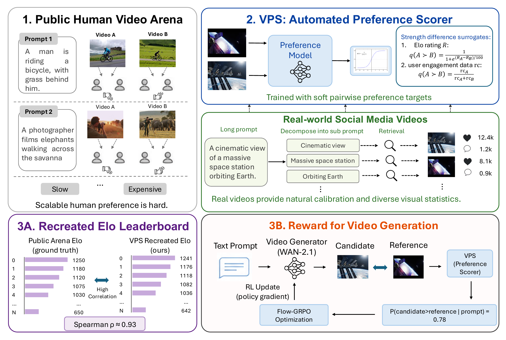
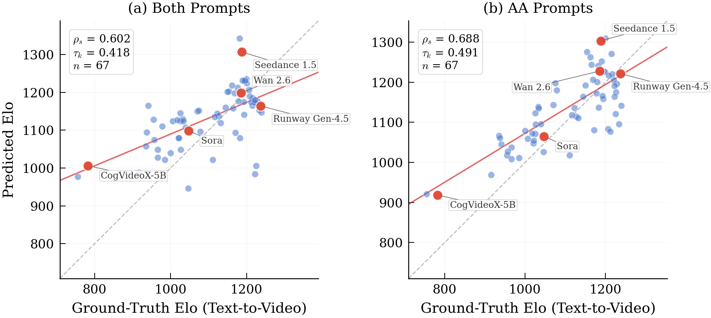
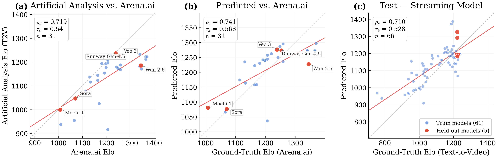
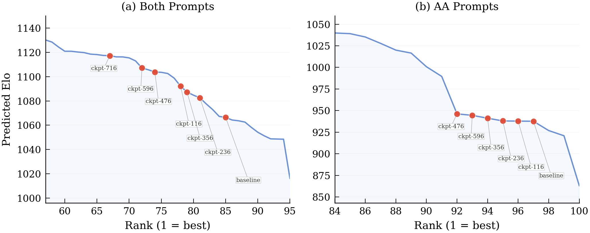

Abstract
Evaluating video generation models is notoriously challenging; existing metrics either fail to align with human judgment or rely on costly, unscalable human ratings. In this work, we introduce Video Preference Score (VPS), a fully automated video preference score designed to directly model human judgment and accurately recreate large-scale, Elo-based video arenas. Trained on a newly collected dataset that augments generated videos with retrieved real-world footage, VPS evaluates paired videos against complex text prompts to predict human preference. Experiments demonstrate that VPS correlates highly with human consensus and generalizes zero-shot across unseen models and benchmarks. Furthermore, we showcase its utility beyond evaluation: as a plug-in reward model, VPS seamlessly integrates with Flow-GRPO to improve WAN-2.1's generative quality by 51 Elo points. Overall, VPS provides a scalable and generalizable solution for both evaluating and aligning modern video generation models.
Highlights
Best held-out arena leaderboard reconstruction on Artificial Analysis text-to-video pairs, beating metric- and rating-based baselines.
Generalizes to the external Arena AI leaderboard across 31 shared models without retraining (Kendall's τ = 0.57).
Used as a plug-in reward model, VPS-Combined lifts WAN-2.1 by 51 Elo points (vs. +9 for VPS-AA).
A new pairwise dataset combining arena-generated and retrieved real-world videos — an order of magnitude larger than prior preference data.
How it works
1 · A pairwise preference model
Given a prompt y and two videos xA, xB, VPS predicts P(A ≻ B | y) — the probability that the first video is preferred. Each video is encoded with Qwen2.5-VL-7B (3584-d) and the prompt with all-MiniLM-L6-v2 (384-d). The concatenated features feed an MLP head, trained with soft binary cross-entropy directly on pairwise comparisons — matching the structure of human preference arenas rather than pointwise ratings.
2 · Weakly-supervised targets at scale
Soft preference labels come from signals that are noisy but available at scale: public Elo gaps for
generated–generated pairs (via a Bradley–Terry sigmoid), relative social-media engagement
(respond_count) for real–real pairs, and a fixed naturalness prior (0.75) for
real–generated pairs.
3 · Recreating the leaderboard
Predicted pairwise probabilities are converted to per-model Elo scores by a scaled logit transform and a least-squares solve over all pairs, then affine-aligned to the public leaderboard. Rankings are scored with Spearman's ρ, Kendall's τ, top-k overlap, and median rank error.
4 · A plug-in reward model
To use VPS in RL, each generated video is compared against a fixed, prompt-matched reference embedding cached from a base WAN-2.1 sample. This yields a stable pointwise reward while preserving pairwise semantics, which we instantiate in Flow-GRPO to fine-tune WAN-2.1.
Results



Qualitative comparison
WAN-2.1 before vs. after Flow-GRPO fine-tuning with the VPS-Combined reward. The fine-tuned model better follows the prompt — sharper camera control, more coherent motion, and improved content relevance. Videos loop automatically.
The baseline fails to capture the iceberg underwater; the fine-tuned model recovers it.
The baseline fails to capture the movement of the camel.
The prompt asks the camera to zoom out, which the baseline fails to do.
For “slowly track backward”, the baseline fails to capture the movement of the astronaut.
BibTeX
Citation will be finalized upon release.
@inproceedings{vps2026,
title = {Recreating Video Arenas via Automated Preference Scoring},
author = {Anonymous Authors},
booktitle = {Advances in Neural Information Processing Systems (NeurIPS),
Datasets and Benchmarks Track},
year = {2026},
note = {Under review}
}